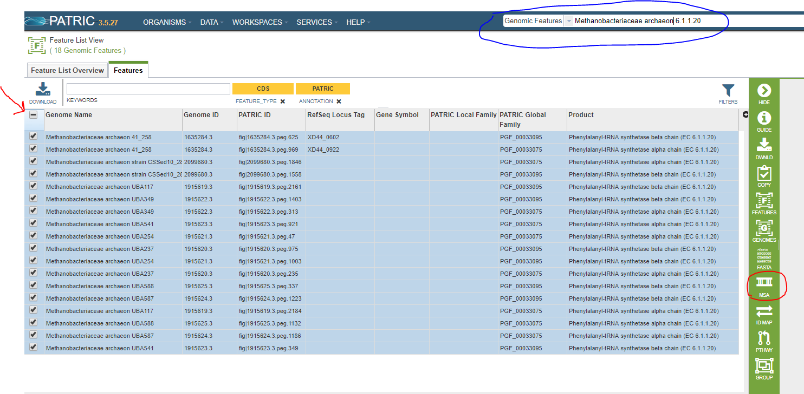
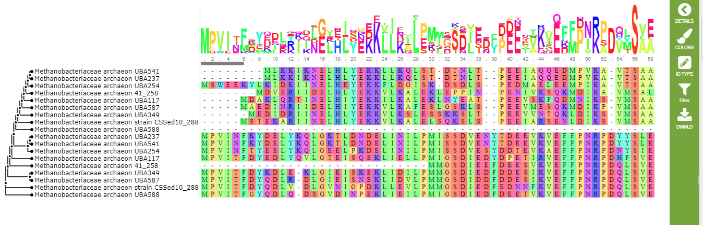
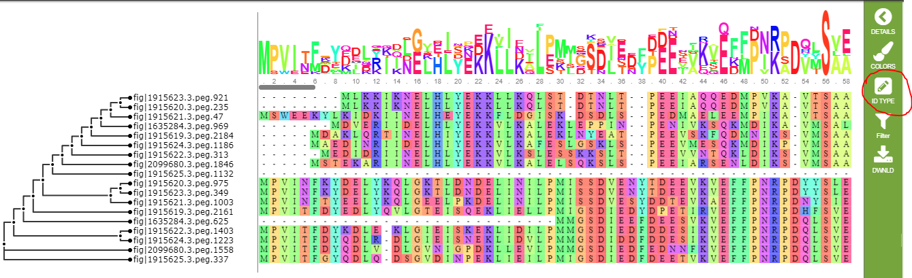

Creating a Multiple-Sequence Alignment¶
Basic Steps¶
List the features of interest and select them.
Invoke the Multiple-Sequence Alignment Tool.
Choose Nucleotide or Amino Acid.
Process the result.
List the Features of Interest and Select Them¶
Since it is a tool, rather than a service, Multiple-Sequence Alignment is not available from the menus at the top of the PATRIC web pages. Instead, you select a group of features from a feature list and click on the tool icon in the green sidebar.
You can do a feature search to find the features you want, or you can use a feature group. In this example, we will align all of the features with EC number 6.1.1.20 in Methanobacteriaceae archaeon genomes. In the screenshot below, the search we used to get these features is circled in blue. To select all the features in the list, click on the checkbox shown by the red arrow.

There are any number of ways to get a suitable feature list. In addition to searching for eligible features, you can create a feature group in your workspace and list it from there (see Data Groups).
Invoke the Multiple-Sequence Alignment Tool¶
The icon for the Multiple-Sequence Alignment tool appears on the green control bar whenever you have more than one feature selected, and is identified by the acronym MSA. In the screenshot above, the icon is circled in red. Click this icon to invoke the tool.
Choose the Alignment Type¶
A callout will appear below the icon. Click on Nucleotide for a DNA alignment or Amino Acid for a protein amino acid alignment.
Process the Result¶
The resulting alignment is shown below.

Each codon is assigned a different color. There are 15 color schemes defined in PATRIC. You can choose any one of them, or turn color-coding off entirely, by clicking the colors icon on the green control bar.
The default display shows the name of each genome containing the feature in a particular row of the alignment. In our example, this doesn’t quite work because one of the genomes has two features in the list. You can use the ID type icon to change the display to use feature IDs. This is shown below.

The filter button allows you to hid columns in the alignment. You can hide columns by the percentage of conservation or the percentage of gaps, and for whichever criterion is selected, you can specify a minimum percentage, a maximum percentage, or a percentage range. The filtering chooses columns to hide, so (for example) if you filter on gaps of less than 50%, it will hide those columns and show only columns with more than 50% gap characters. Each time you use the filter button, it works with the columns remaining on the display. So, if you hide columns with more than 50% gap characters and then hide the ones with more than 50% conservation, you will see only columns with less than 50% gap characters and less than 50% conservation. To get all the columns back, use the Reset option.
Finally, you can use the DWNLD button to download the alignment, either as an alignment in FASTA or text format, or as a tree in SVG or Newick format.